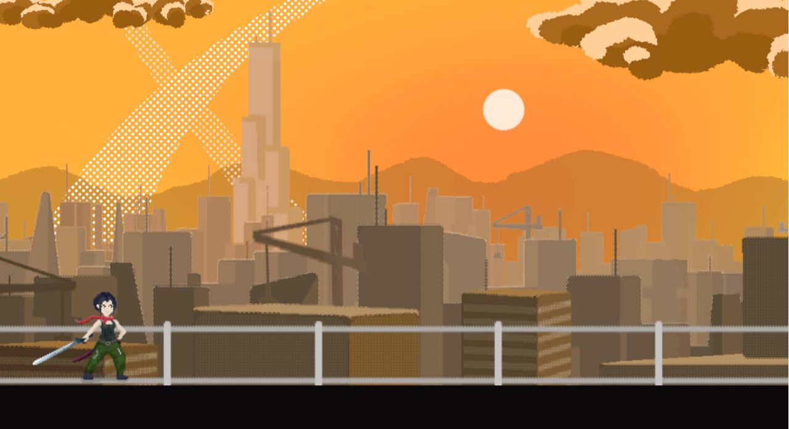

Title of game: Milestone Role: Artist / Designer

Playtesting Feedback: 1. Positive: All of the players enjoyed the art style which made me happy. Many said that they would be excited to see what the game will look like when completed. But most of the players mentioned how there should be more character interactions and animations, which made me nervous because that meant I would have to spend a lot more time working on pixel art. 2. Negative/contrsuctive: All the players agreed that the game was lacking content. Most Players mentioned the lack of mechanics and interactions. It was obvious that the game was not complete and that more time should be spend on development. Some specific suggestions were to add side scrolling, make the jump more fluid, add combat mechanics, and most importantly add a objective for the player. One player mentioned how it was difficult to grasp the intent of the game. 3. Conclusion: This project made me realize that I overscoped with the art style, and really just the conceptual process of making this game as a whole. I asked my partner if we could pivot by making a different game with a simpler art style, however, he contended by saying we were too far into development for that to happen. He wasn't wrong, so it would be silly to argue against him. At least now I know how to scope better for the future, I am excited to work on the upcoming final project.